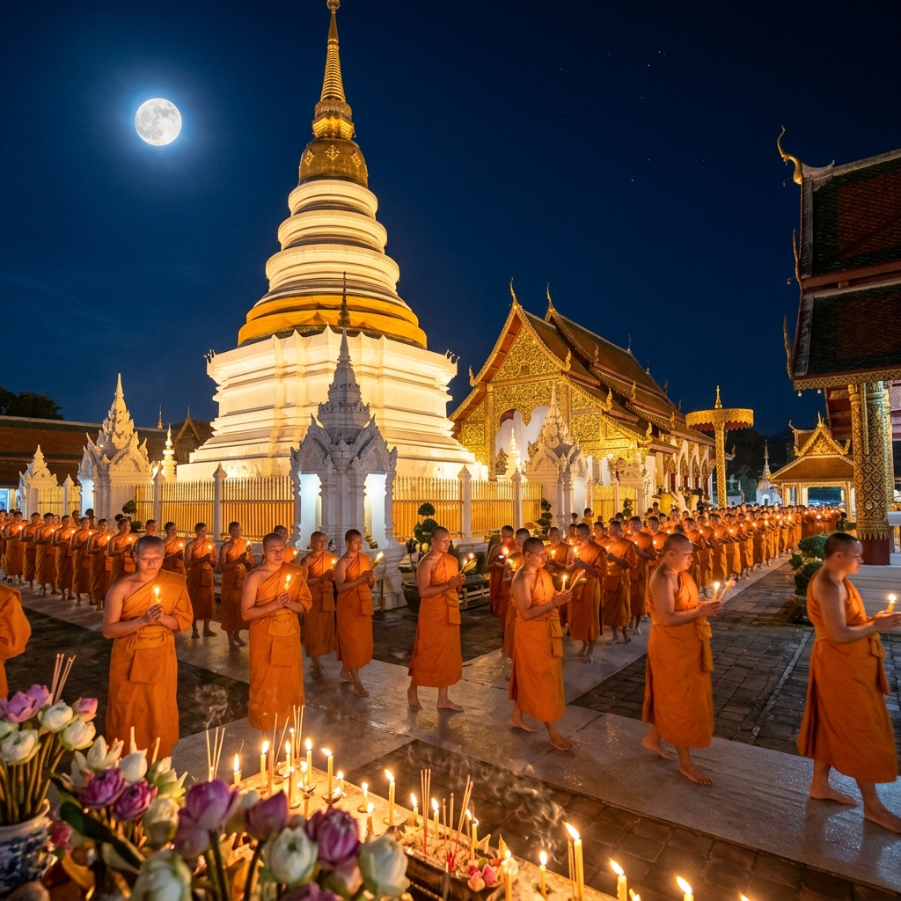

ความหมายของวันอาสาฬหบูชา
"อาสาฬหบูชา" มาจากภาษาบาลี "อาสาฬห" หมายถึง เดือน ๘ (เดือนอาสาฬหะ) และ "บูชา" หมายถึง การบูชา รวมความว่า "การบูชาในเดือนอาสาฬหะ"
วันอาสาฬหบูชาตรงกับวันขึ้น ๑๕ ค่ำ เดือน ๘ เป็นวันที่พระพุทธเจ้าทรงแสดงพระธรรมเทศนาครั้งแรก คือ "ธัมมจักกัปปวัตตนสูตร" แก่ปัญจวัคคีย์ ณ ป่าอิสิปตนมฤคทายวัน เมืองพาราณสี
ถือได้ว่าเป็นวันกำเนิด พระรัตนตรัย อย่างสมบูรณ์ คือ มีพระพุทธ พระธรรม และพระสงฆ์ ครบทั้ง ๓ ประการ
📚 ที่มา: กรมการศาสนา กระทรวงวัฒนธรรมพระรัตนตรัย
ในวันอาสาฬหบูชา พระรัตนตรัยครบบริบูรณ์เป็นครั้งแรก
พระพุทธ
พระพุทธเจ้าผู้ตรัสรู้ ทรงเป็นพระศาสดาของพระพุทธศาสนา
พระธรรม
ธัมมจักกัปปวัตตนสูตร คำสอนของพระพุทธเจ้าที่ทรงแสดงเป็นครั้งแรก
พระสงฆ์
ท่านโกณฑัญญะ บรรลุธรรมสำเร็จเป็นพระอรหันต์รูปแรก กำเนิดพระสงฆ์รูปแรก

มัชฌิมาปฏิปทา
ทางสายกลาง
ในปฐมเทศนา พระพุทธเจ้าทรงแสดง มัชฌิมาปฏิปทา (ทางสายกลาง) โดยทรงแนะนำให้ละทางสุดโต่ง ๒ ทาง ได้แก่
- ❌ กามสุขัลลิกานุโยค — การหมกมุ่นในกามสุข ความสนุกสนาน
- ❌ อัตตกิลมถานุโยค — การทรมานตนเองอย่างหนัก
และทรงแนะนำ มรรคมีองค์ ๘ (อัฏฐังคิกมรรค) เป็นทางดับทุกข์
มรรคมีองค์ ๘
กิจกรรมในวันอาสาฬหบูชา
- 🙏ทำบุญตักบาตรในตอนเช้า
- 🕯️เวียนเทียนรอบอุโบสถ ๓ รอบในเวลาค่ำ
- 📿สวดมนต์ ฟังธรรม ปฏิบัติสมาธิ
- 🌺ถวายเทียน ดอกไม้ ธูป บูชาพระ
- 🚫งดดื่มสุราและอบายมุขทุกชนิด
นอกจากนี้ วันอาสาฬหบูชายังเป็นวันก่อนวันเข้าพรรษา ๑ วัน พุทธศาสนิกชนมักเตรียมตัวถวายเทียนพรรษาเพื่อนำไปถวายวัดในวันรุ่งขึ้น
📚 แหล่งอ้างอิง
- กรมการศาสนา. (2566). วันอาสาฬหบูชา. www.dra.go.th
- พระธรรมปิฎก (ป.อ. ปยุตฺโต). (2546). พจนานุกรมพุทธศาสตร์ ฉบับประมวลธรรม. กรุงเทพ: มหาจุฬาลงกรณราชวิทยาลัย.
- Wikipedia TH. (2566). วันอาสาฬหบูชา. th.wikipedia.org